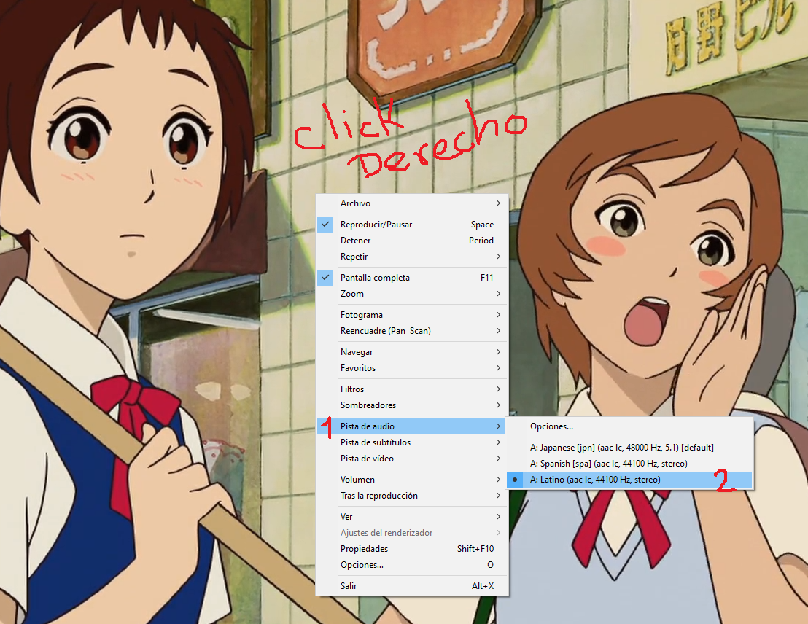

En computador hay varias carpetas unas tienen películas, series y cursos.
Los puedes revisar los cursos para tu carrera profesional, créeme vas a necesitar los en la universidad. Como no sé qué vas a estudiar, decidí enviarte un poco de todo.
algunas películas tienen diferentes audios y no siempre esta seleccionado en español. Para cambiarlo solo hay que presionar click derecho en cualquier parte y seleccionar la pista de audio.
Este pc es bastante viejo y no sé cuánto más pueda durar, pero aun funciona bien, simplemente no la hagas trabajar demasiado, re recalienta mucho por el lado izquierdo donde tiene el ventilador, para eso está el ventilador externo donde puedes apoyarlo.